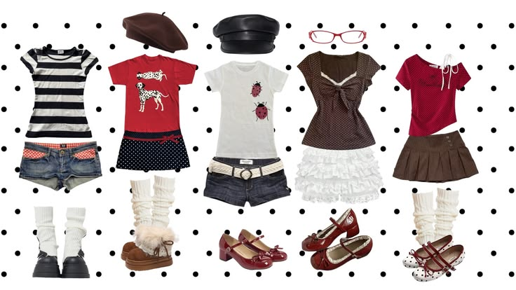
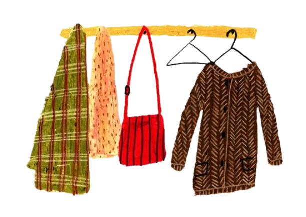
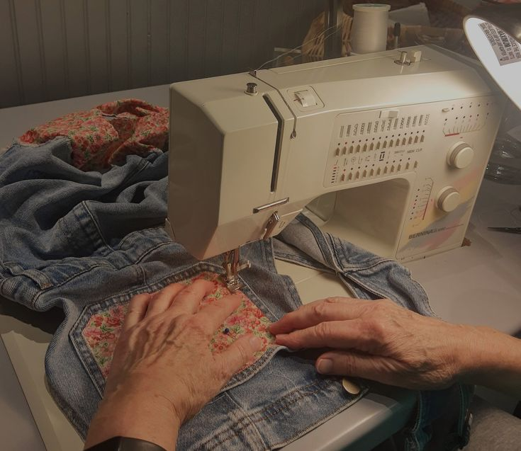
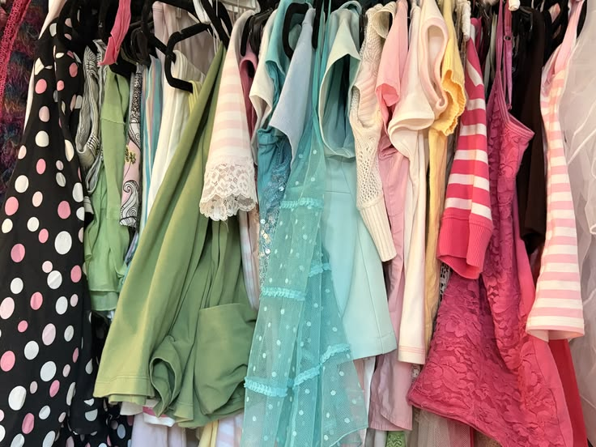
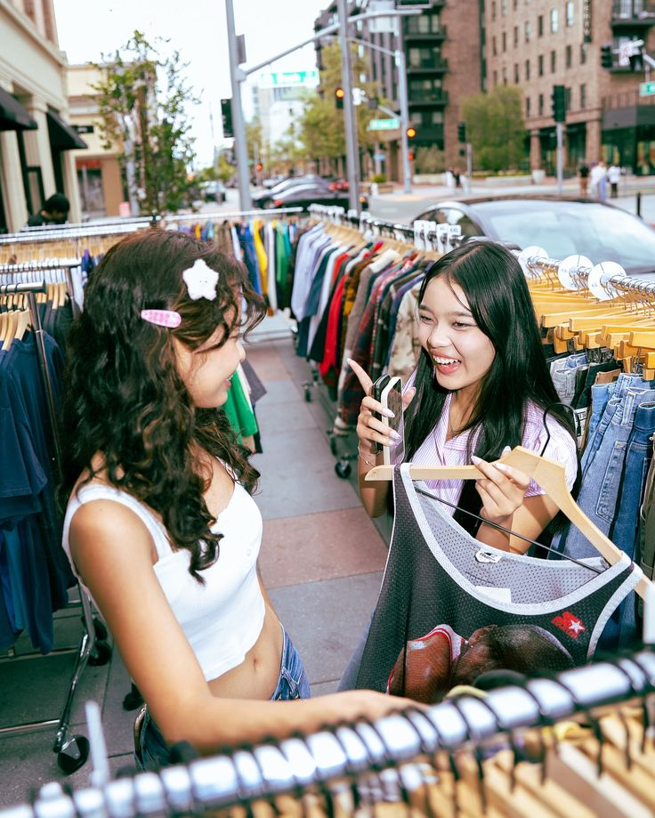

AI Personal Stylist/Circular Assistant
Upload pictures of your clothes and get personalised outfits whenever you need them. Our AI scans clothes for any repairs and gives you how to fix them!
Atelier brings together local tailors, circular resale, and community-led upcycling to extend the life of garments and rethink fashion consumption.

Welcome to Atelier!
Helping steer fashion in a more sustainable direction by simplifying outfit styling and giving existing wardrobes a second life.

Upload pictures of your clothes and get personalised outfits whenever you need them. Our AI scans clothes for any repairs and gives you how to fix them!

Look for local tailors around you for repairs, alterations or other tailor works!

Buy/Sell/Trade pre-loved garments, deadstock fabric, and scrap bundles with clear conditions and pricing

Share fashion tips, repair hacks and connect with fellow fashion lovers and make fashion more sustainable!
Your local calendar for repair cafes, swap meets, and DIY upcycling workshops. Show up and learn a skill!